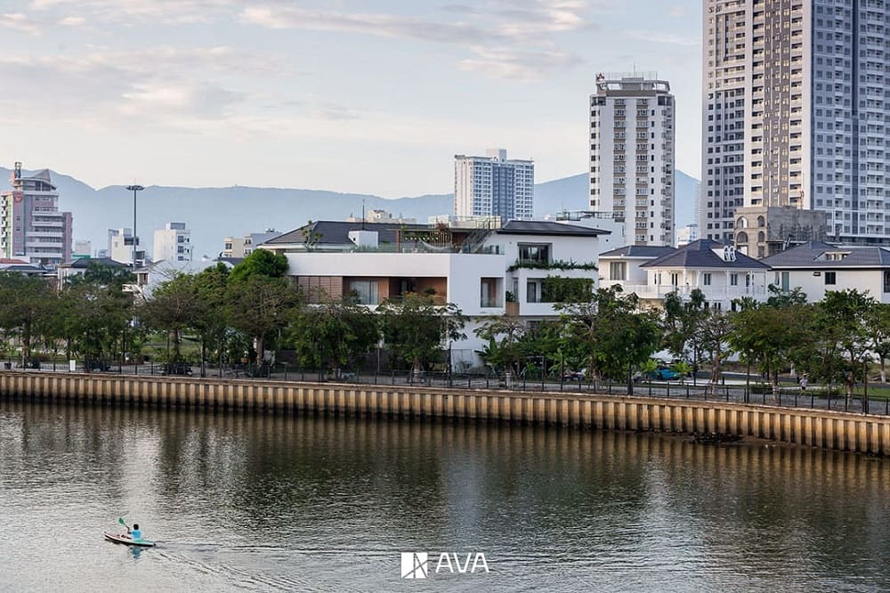
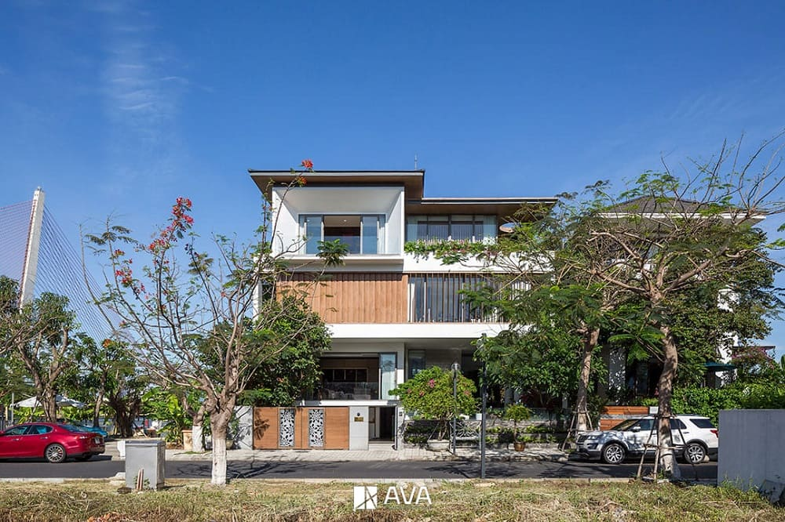
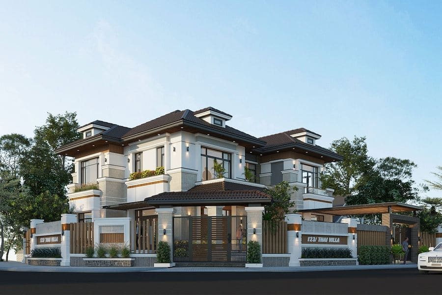
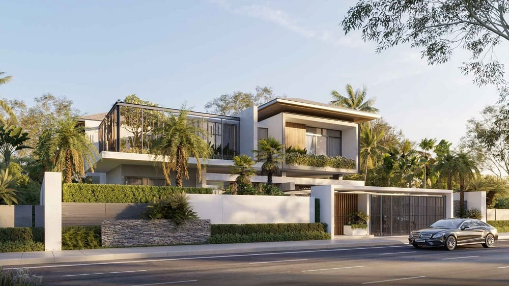
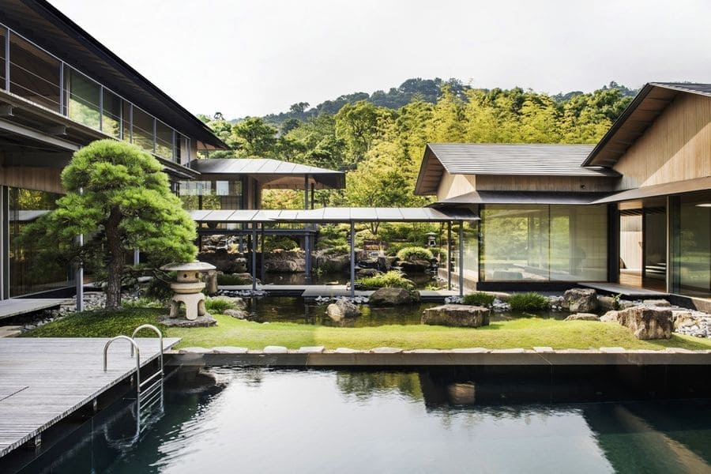
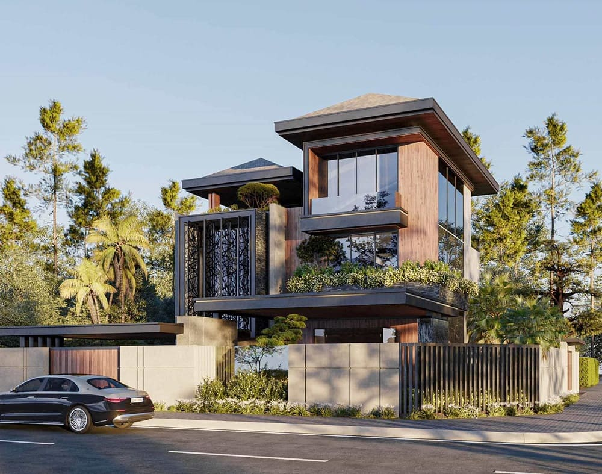
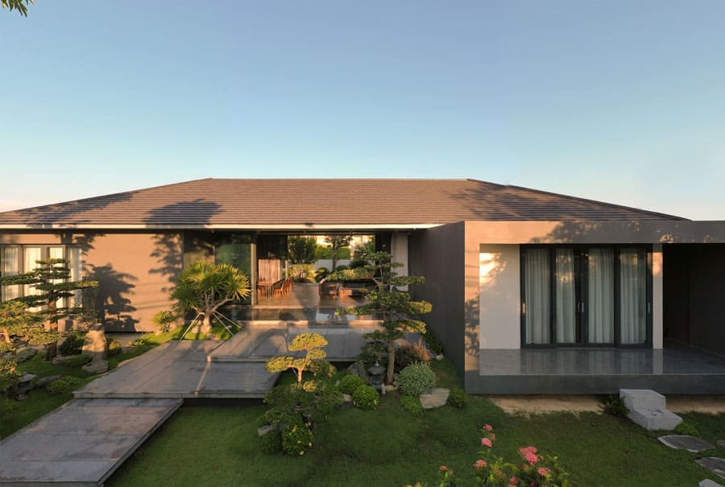
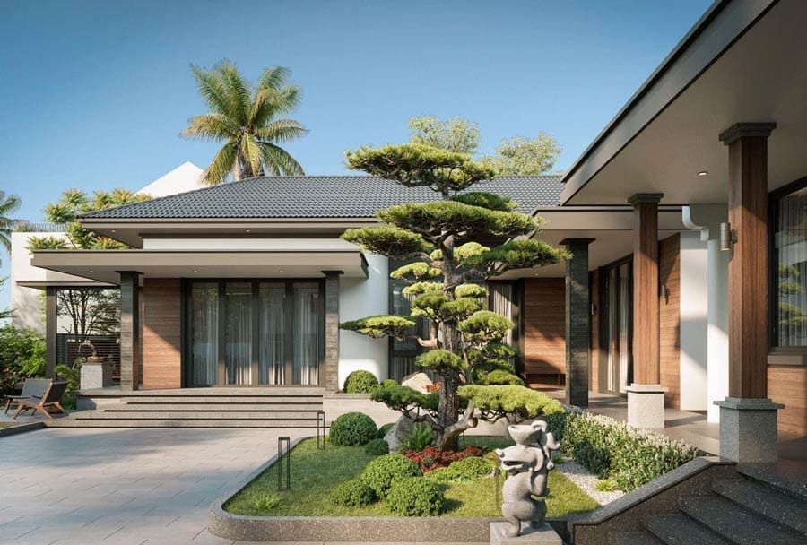
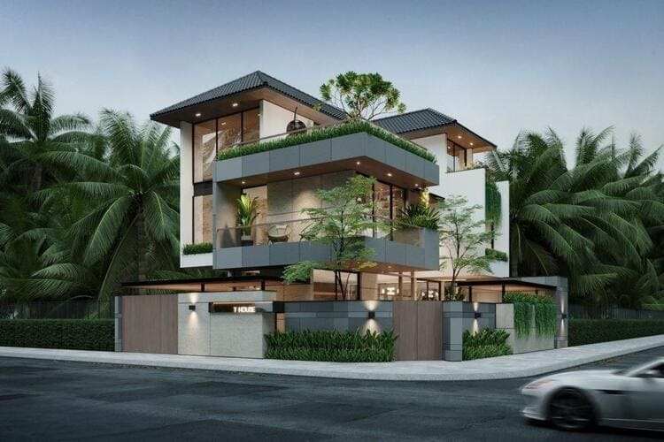

Nhà mái Nhật là gì mà ngày càng được nhiều gia đình Việt lựa chọn trong thiết kế nhà ở hiện đại? Với vẻ đẹp tinh tế, hài hòa giữa truyền thống và phong cách tối giản, nhà mái Nhật không chỉ ghi điểm về thẩm mỹ mà còn nổi bật về công năng sử dụng. Hãy cùng AVA Architects khám phá chi tiết nhà mái Nhật là gì, đặc điểm và lý do vì sao kiểu kiến trúc này đang trở thành xu hướng trong bài viết dưới đây.
Xem thêm:
- 100+ mẫu nhà đẹp Đà Nẵng – Công trình thực tế
- Thiết kế nhà ở kết hợp căn hộ tại Đà Nẵng
- 20+ mẫu nhà ở kết hợp kinh doanh hiện đại
Nhà mái Nhật là gì?
Nhà mái Nhật là gì? Đây là kiểu mái được phát triển từ sự giao thoa giữa mái Thái và mái dốc truyền thống của châu Âu, tạo nên một tổng thể kiến trúc cân đối và tinh tế. Không quá cầu kỳ nhưng vẫn đầy sáng tạo, nhà mái Nhật gây ấn tượng bởi vẻ đẹp thanh thoát, trang nhã và nét cuốn hút nhẹ nhàng mang đậm tinh thần Á Đông.

Nhà mái Nhật là kiểu kiến trúc tối giản, hài hòa giữa truyền thống và hiện đại (C: The Riverside House – AVA Architects)
Đặc điểm của nhà mái Nhật
Kiểu dáng bắt mắt
Nhà mái Nhật gây ấn tượng nhờ hình khối hài hòa và thiết kế thu hút, được hình thành từ sự giao thoa tinh tế giữa mái Thái và mái dốc cổ điển châu Âu. Sự kết hợp này không chỉ mang đến diện mạo mới mẻ cho công trình mà còn tạo nên dấu ấn thẩm mỹ riêng biệt cho các mẫu nhà sử dụng mái Nhật. Đặc biệt, kiểu mái này có khả năng thích ứng cao với nhiều phong cách kiến trúc khác nhau, giúp gia chủ linh hoạt trong lựa chọn thiết kế và gia tăng giá trị thẩm mỹ tổng thể.

Nhà mái Nhật có kiểu dáng cân đối, thanh thoát với hệ mái dốc nhẹ (C: The Riverside House – AVA Architects)
Phù hợp với đa dạng phong cách, kiến trúc
Nhà mái Nhật sở hữu thiết kế tinh gọn, mang hơi hướng hiện đại, dễ dàng hòa hợp với đa dạng phong cách kiến trúc. Nhờ đó, gia chủ có thể linh hoạt lựa chọn từ phong cách cổ điển, bán cổ điển đến hiện đại, đáp ứng trọn vẹn cá tính và gu thẩm mỹ riêng.
Không chỉ vậy, kiểu mái này còn thích nghi tốt với nhiều loại hình và quy mô công trình khác nhau, từ nhà ở đến biệt thự, mà vẫn đảm bảo sự cân đối về thẩm mỹ và tối ưu công năng, mang đến không gian sống tiện nghi, thoải mái cho cả gia đình.
Đáp ứng mọi điều kiện khí hậu
Nhà mái Nhật thể hiện rõ nét triết lý kiến trúc Nhật Bản với sự đề cao tính tối giản và công năng sử dụng. Khi du nhập vào Việt Nam, kiểu nhà này đã được tinh chỉnh linh hoạt nhằm thích ứng với điều kiện khí hậu cũng như thói quen sinh hoạt của người Việt. Không chỉ chú trọng đến hình thức, thiết kế nhà mái Nhật còn hướng đến việc tạo lập không gian sống chan hòa với thiên nhiên, kết hợp cây xanh và cảnh quan xung quanh, mang lại cảm giác thư thái, trong lành và bình yên cho gia đình.

Nhà mái Nhật với độ dốc hợp lý giúp thoát nước tốt, rất phù hợp với điều kiện khí hậu nóng ẩm (C: The Riverside House – AVA Architects)
Ưu và nhược điểm của nhà mái Nhật
Ưu điểm
Nhà mái Nhật ngày càng được ưa chuộng nhờ sở hữu nhiều ưu điểm nổi bật, đáp ứng tốt cả về thẩm mỹ lẫn công năng sử dụng.
- Tính thẩm mỹ cao, hài hòa kiến trúc: Thiết kế mái Nhật mang đường nét cân đối, thanh thoát, không quá cầu kỳ nhưng vẫn tạo được điểm nhấn tinh tế cho tổng thể công trình. Kiểu mái này dễ dàng kết hợp với nhiều phong cách kiến trúc khác nhau, từ hiện đại, bán cổ điển đến truyền thống, giúp ngôi nhà luôn giữ được vẻ đẹp bền vững theo thời gian.
- Phù hợp với điều kiện khí hậu Việt Nam: Mái Nhật có độ dốc vừa phải, giúp thoát nước mưa nhanh, hạn chế tình trạng ứ đọng và thấm dột. Đồng thời, kết cấu mái giúp giảm hấp thụ nhiệt, góp phần giữ cho không gian bên trong luôn mát mẻ, đặc biệt phù hợp với khí hậu nhiệt đới nóng ẩm.
- Tối ưu công năng và không gian sống: Thiết kế mái Nhật giúp không gian bên trong nhà trở nên thông thoáng hơn, dễ dàng bố trí công năng và mở rộng diện tích sử dụng. Nhờ đó, ngôi nhà không chỉ đẹp về hình thức mà còn tiện nghi, đáp ứng tốt nhu cầu sinh hoạt của gia đình.
- Linh hoạt về quy mô và loại hình công trình: Nhà mái Nhật có thể áp dụng cho nhiều loại hình nhà ở khác nhau như nhà phố, nhà vườn, biệt thự… với đa dạng quy mô. Dù diện tích lớn hay nhỏ, kiểu mái này vẫn đảm bảo sự cân đối, hài hòa và nâng cao giá trị tổng thể của công trình.

Nhà mái Nhật nổi bật với thiết kế đẹp mắt, thoát nước tốt và dễ dàng (C: Internet)
Nhược điểm
Bên cạnh những ưu điểm nổi bật, nhà mái Nhật cũng tồn tại một số hạn chế nhất định mà gia chủ cần cân nhắc trước khi lựa chọn.
- Chi phí thi công cao hơn mái bằng: So với nhà mái bằng, mái Nhật có kết cấu phức tạp hơn, đòi hỏi nhiều vật liệu và thời gian thi công, từ đó khiến chi phí xây dựng ban đầu cao hơn. Điều này có thể không phù hợp với những gia chủ có ngân sách hạn chế.
- Yêu cầu kỹ thuật thi công chính xác: Mái Nhật cần được thiết kế và thi công đúng kỹ thuật để đảm bảo độ dốc, khả năng thoát nước và tính thẩm mỹ. Nếu đơn vị thi công thiếu kinh nghiệm, công trình dễ gặp các vấn đề như thấm dột, sai tỷ lệ hoặc mất cân đối tổng thể.
- Hạn chế trong việc tận dụng không gian mái: Do đặc điểm mái dốc thấp, nhà mái Nhật khó tận dụng phần mái để làm không gian sinh hoạt hoặc lưu trữ như một số loại mái khác. Điều này có thể làm giảm khả năng mở rộng diện tích sử dụng của ngôi nhà.
- Khó sửa chữa, cải tạo về sau: Khi cần cải tạo hoặc nâng tầng, việc can thiệp vào kết cấu mái Nhật thường phức tạp hơn so với mái bằng, đòi hỏi tính toán kỹ lưỡng để không ảnh hưởng đến kết cấu và thẩm mỹ chung của công trình.

Nhược điểm của nhà mái Nhật là chi phí thi công và yêu cầu kỹ thuật cao (C: Internet)
Phân biệt nhà mái Nhật và nhà mái Thái
| Tiêu chí so sánh | Nhà mái Nhật | Nhà mái Thái |
| Chi phí xây dựng | Thiết kế tối giản, ít chi tiết phức tạp nên chi phí thi công và thời gian xây dựng tương đối hợp lý. Ngoài ra, vật liệu mái đa dạng với nhiều mức giá giúp gia chủ linh hoạt lựa chọn và dễ dàng tối ưu ngân sách. | Kết cấu cầu kỳ hơn, nhiều chi tiết trang trí và hình khối phức tạp nên chi phí xây dựng và thời gian thi công thường cao hơn so với mái Nhật. |
| Độ dốc mái | Độ dốc mái vừa phải, phần đỉnh tương đối bằng phẳng, thường có độ dốc thấp (dưới 40%), tạo cảm giác cân đối và nhẹ nhàng cho tổng thể công trình. | Độ dốc lớn, đặc biệt ở những mẫu có chóp nhọn, giúp mái cao ráo và nổi bật về hình khối. |
| Thiết kế chóp mái | Phần đỉnh mái không nhọn, thiết kế trải đều và mềm mại, mang lại vẻ đẹp tinh tế, hiện đại. | Chóp mái nhọn là điểm nhấn đặc trưng, các mặt mái xuôi dốc rõ rệt, tạo hình ảnh mạnh mẽ và ấn tượng. |
| Phong cách kiến trúc | Mang đậm tinh thần kiến trúc Nhật Bản, đề cao sự tối giản, tinh tế và hài hòa với thiên nhiên, sân vườn và cảnh quan xung quanh. | Gắn liền với kiến trúc và văn hóa Thái Lan, thể hiện rõ nét truyền thống và bản sắc khu vực Đông Nam Á. |
Xem thêm:
- Nhà mái bằng là gì?
- Biệt thự nhà vườn là gì? Ưu điểm so với các loại hình nhà ở khác
- Mật độ xây dựng là gì? Cách tính mật độ xây dựng năm 2026
TOP mẫu nhà mái Nhật xu hướng 2026

Mẫu nhà mái Nhật sở hữu thiết kế thanh thoát, tạo cảm giác cân đối và hài hòa (C: Internet)

Mẫu nhà mái Nhật được đánh giá cao nhờ khả năng thích nghi tốt với khí hậu Việt Nam (C: Internet)

Mẫu nhà mái Nhật là sự kết hợp tinh tế giữa nét truyền thống và phong cách hiện đại (C: Internet)

Mẫu nhà mái Nhật mang đến không gian sống tiện nghi, gần gũi và giàu tính thẩm mỹ (C: Internet)
Một số câu hỏi thường gặp về nhà mái Nhật
Có nên xây nhà mái Nhật không?
Nhà mái Nhật là lựa chọn phù hợp cho những gia chủ yêu thích phong cách kiến trúc tinh giản, nhẹ nhàng và gắn kết với thiên nhiên. Đặc trưng bởi hệ mái dốc vừa phải, kiểu nhà này không chỉ nâng cao giá trị thẩm mỹ cho công trình mà còn hỗ trợ thoát nước hiệu quả, đặc biệt thích hợp với những khu vực có lượng mưa lớn. Sự kết hợp hài hòa giữa yếu tố truyền thống và hiện đại giúp nhà mái Nhật tạo nên không gian sống yên tĩnh, thư thái và giàu tính thẩm mỹ.
Dẫu vậy, trước khi lựa chọn nhà mái Nhật, gia chủ nên xem xét kỹ các yếu tố liên quan đến chi phí bảo dưỡng, sửa chữa cũng như mức độ phù hợp của thiết kế với điều kiện khí hậu địa phương. Việc cân đối giữa nhu cầu thẩm mỹ và tính thực tiễn sẽ giúp đảm bảo ngôi nhà không chỉ đẹp về hình thức mà còn bền vững và tiết kiệm chi phí trong quá trình sử dụng lâu dài.
Lưu ý khi thiết kế nhà mái Nhật
Khi đã lựa chọn thiết kế nhà mái Nhật, gia chủ cần lưu ý một số yếu tố quan trọng để công trình đạt hiệu quả tối ưu cả về thẩm mỹ lẫn độ bền. Trước hết, độ dốc mái cần được tính toán hợp lý, phù hợp với đặc điểm khí hậu và thời tiết tại khu vực xây dựng. Bên cạnh đó, hệ mái phải đảm bảo khả năng thoát nước tốt nhằm hạn chế tình trạng đọng nước gây ảnh hưởng đến kết cấu.

Khi thiết kế nhà mái Nhật, cần tính toán kỹ độ dốc, khả năng thoát nước và lựa chọn vật liệu phù hợp (C: Internet)
Việc lựa chọn vật liệu xây dựng chất lượng, có nguồn gốc rõ ràng cũng đóng vai trò quan trọng, giúp mái nhà bền bỉ và thích ứng tốt với các điều kiện thời tiết khác nhau. Ngoài ra, gia chủ nên cân nhắc cách bố trí và tận dụng không gian gác mái sao cho phù hợp với đặc trưng kiến trúc mái Nhật. Cuối cùng, cần dự trù và tính toán kỹ lưỡng các khoản chi phí từ xây dựng, bảo trì đến những chi phí phát sinh để đảm bảo quá trình thi công và sử dụng lâu dài được hiệu quả, tiết kiệm.
Chi phí xây nhà mái Nhật
Chi phí xây dựng nhà mái Nhật chịu ảnh hưởng bởi nhiều yếu tố như điều kiện mặt bằng, quy mô công trình, mức độ phức tạp của thiết kế, cũng như chủng loại và giá thành vật liệu sử dụng. Mỗi công trình sẽ có mức chi phí khác nhau tùy theo nhu cầu và yêu cầu cụ thể của gia chủ.
Thông thường, tổng chi phí thi công nhà mái Nhật được ước tính theo công thức:
Chi phí xây dựng = Diện tích xây dựng × Đơn giá/m²
Mức chi phí này bao gồm toàn bộ các hạng mục từ chi phí thiết kế, thi công phần thô cho đến hoàn thiện công trình, giúp gia chủ dễ dàng dự trù ngân sách trước khi triển khai xây dựng.
Qua những thông tin trên, hy vọng bạn đã hiểu rõ nhà mái Nhật là gì cũng như những đặc trưng, ưu điểm và lưu ý quan trọng khi lựa chọn kiểu kiến trúc này. Với sự hài hòa giữa thẩm mỹ, công năng và khả năng thích ứng với khí hậu, nhà mái Nhật ngày càng trở thành xu hướng được nhiều gia chủ yêu thích.
Nếu bạn đang tìm kiếm một giải pháp thiết kế nhà mái Nhật phù hợp với nhu cầu, ngân sách và phong cách sống của gia đình, AVA Architects sẵn sàng đồng hành cùng bạn từ khâu tư vấn, thiết kế đến triển khai thi công. Liên hệ ngay với AVA Architects để được đội ngũ kiến trúc sư giàu kinh nghiệm hỗ trợ và hiện thực hóa không gian sống lý tưởng của bạn.
- Market Analyst
- Mỹ Vân là Chuyên viên Phân tích Thị trường, đảm nhận vai trò nghiên cứu và phân tích chuyên sâu các xu hướng của ngành kiến trúc, loại hình dự án và thị trường bất động sản cho AVA Architects. Vân đã và đang hỗ trợ AVA Architects liên tục đổi mới và đưa ra quyết định chiến lược chính xác, đồng thời cung cấp cho khách hàng những góc nhìn giá trị để đưa ra lựa chọn đầu tư hiệu quả nhất. Tất cả đều hướng tới mục tiêu củng cố vị thế tiên phong của AVA và cùng khách hàng kiến tạo nên những giá trị bền vững cho tương lai.
 Blog thiết kế AVA14/09/202699+ Mẫu biệt thự phố đẹp, hiện đại, xu hướng năm 2026
Blog thiết kế AVA14/09/202699+ Mẫu biệt thự phố đẹp, hiện đại, xu hướng năm 2026 Blog thiết kế AVA10/09/2026999+ mẫu biệt thự đẹp đẳng cấp, sang trọng nhất 2026
Blog thiết kế AVA10/09/2026999+ mẫu biệt thự đẹp đẳng cấp, sang trọng nhất 2026 Blog thiết kế AVA09/09/2026Mẫu biệt thự hiện đại sang trọng, hiện đại 2026
Blog thiết kế AVA09/09/2026Mẫu biệt thự hiện đại sang trọng, hiện đại 2026 Blog thi công AVA28/04/2026Lợi ích khi xây nhà trọn gói bạn nhất định phải biết
Blog thi công AVA28/04/2026Lợi ích khi xây nhà trọn gói bạn nhất định phải biết